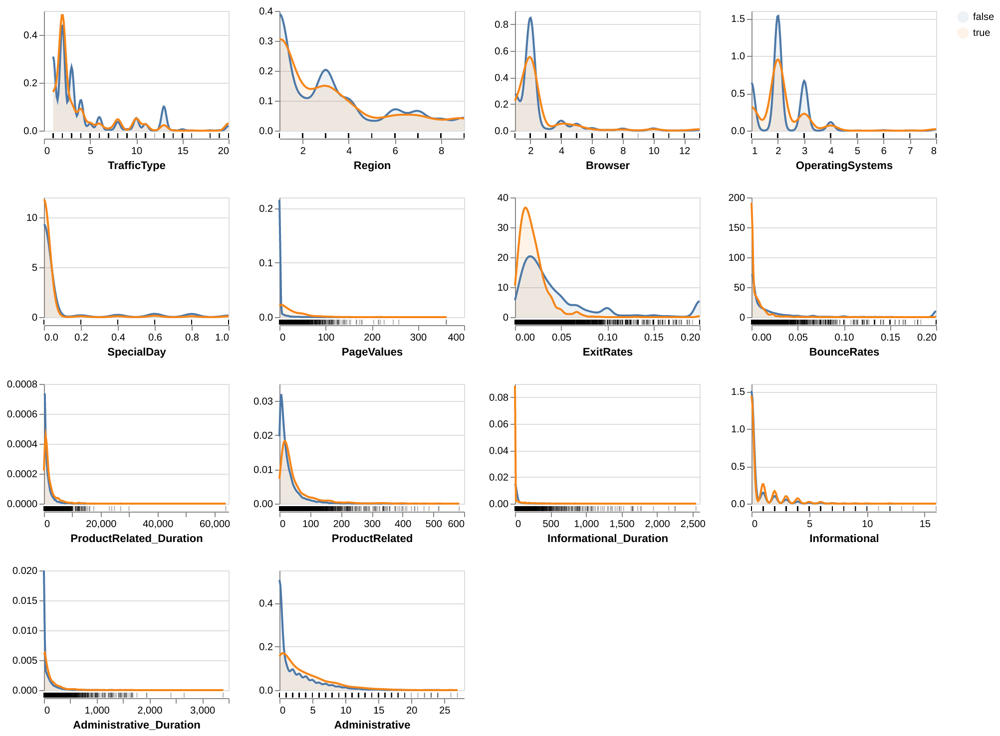
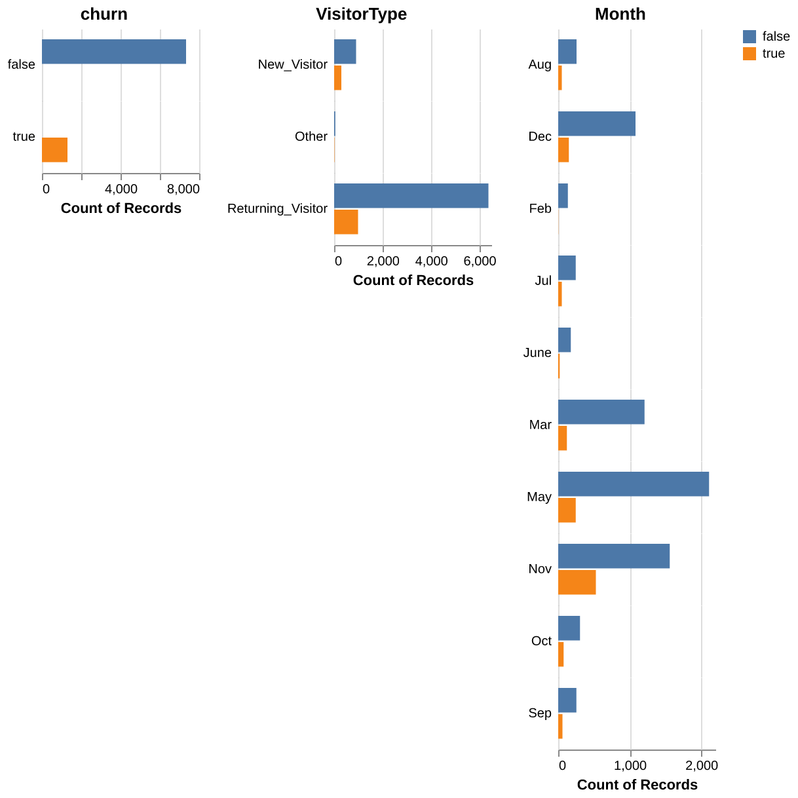
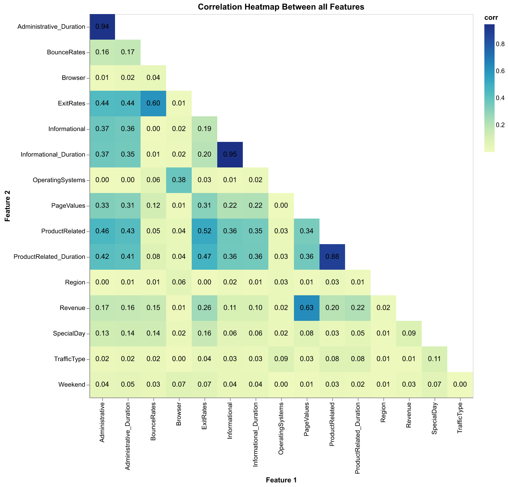
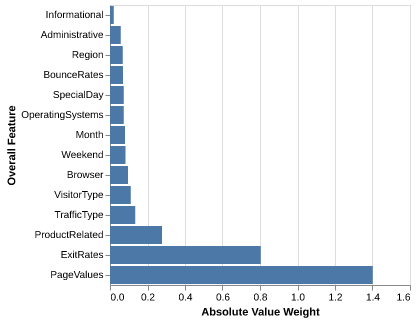

| Model | Validation Score |
|---|---|
| Dummy Model | 0.849496 |
| Logistic Regression Model | 0.886108 |
Online Shoppers Purchasing Intention Prediction
Summary
This study attempts to build a classification model using a logistic regression algorithm to predict whether an online shopper will make a purchase based on their website interaction behaviour. The final classifier model achieved an accuracy of 87.6% on an unseen test dataset. Compare this to a dummy classifier model that always predicts no purchase, with an accuracy of 83.5%. While the logistic regression model performed reasonably well, it did not account for the class imbalance in the dataset, where there purchase target class was significantly less than the no purchase target class. From our logistic regression model, we identified that features PageValue and ExitRate were most important when making predictions. This can suggest that these features are the most significant when determining whether a customer will purchase or not. This model can provide insight for businesses to increase revenue by targeting and optimizing these features in marketing or sales campaigns. Further research addressing class imbalance and exploring alternative models or algorithms could improve predictions, which will increase the model’s ability for businesses to utilize.
Introduction
The growth of online shopping or e-commerce has completely changed how people shop. Online shopping provides the convenience of exploring many different online stores effortlessly from their homes. This gives people more freedom over their time and choices. With this, retail e-commerce sales are estimated to exceed 4.1 trillion U.S. dollars worldwide in 2024 from roughly 2.7 billion online shoppers (Commerce 2024; Taheer 2024). In an evergrowing consumerism society, it is important to understand consumers’ behaviours in addition to their intentions. This can allow businesses to optimize the online shopping experience and maximize revenue in such a massive industry. When shopping in person, a store employee may find it easy to determine a person’s purchasing intention through various social cues. However, while shopping online, companies and businesses find it much more difficult to decide on the intentions of their customers. Businesses need to find solutions from data on user interactions such as page clicks, time spent on pages, time of day or year, and much more. With the evergrowing increase in website traffic, businesses must distinguish between visitors with strong purchasing intentions and those who are simply browsing.
Machine learning is a powerful tool we can utilize to analyze and predict online shoppers purchasing intentions based on behavioral and interaction data. Using machine learning techniques, we can use algorithms and computation to analyze various features such as bounce rates, visitor type, time of year, and many others to identify patterns which can help predict purchasing intention. In this study, we aim to use a machine learning algorithm to predict online shoppers purchasing intentions. This will allow us to extract meaningful insights from user data. In such a lucrative field, determining purchasing intentions is vital to these companies and businesses for increasing revenue. This can help companies and businesses find optimal sales and marketing techniques, or personalize each customer experience on their website.
Methods
Data
The dataset used was sourced from the UCI Machine Learning Repository (Sakar et al. 2018) and can be found here. Each row in the dataset represents a web session on an e-commerce website, including details such as pages visited, time spent, and “Google Analytics” metrics for each page, such as “Bounce Rate”, “Exit Rate”, and “Page Value”. The “Special Day” variable highlights special events, while other web client attributes include OS, browser, region, traffic type, visitor type, and visit timing.
Specifically, our target in the dataset is if the page visitor made a purchase or not (Revenue, true or false)
The features that are in the dataset are:
- The number of account management pages the visitor visited (Administrative)
- The amount of time in seconds that the visitor spent on account management pages (Administrative_Duration)
- The number of informational pages the visitor visited (Informational)
- The amount of time in seconds that the visitor spent on informational pages (Informational_Duration)
- The number of product related pages the visitor visited (ProductRelated)
- The amount of time in seconds that the visitor spent on product related pages (ProductRelated_Duration)
- The average bounce rate of the pages the visitor visited (BounceRates)
- The average exit rate value of the pages that the visitor visited (ExitRates)
- The average page value of the pages that the visitor visited (PageValues)
- How close the time of visiting was to a special day, such as Mother’s Day (SpecialDay)
- The operating system of the visitor (OperatingSystems)
- The browser of the visitor (Browser)
- The region from which the visitor started the session from (Region)
- How the visitor entered the website, such as a banner, SMS, etc. (TrafficType)
- The visitor type, such as “new visitor”, “returning visitor”, etc. (VisitorType)
- If the visitor visited the website on a weekend (Weekend)
- The month in which the visitor visited the website (Month)
Information about the target and features was sourced from Sakar et al.’s study (Sakar et al. 2018).
For data validation, we verified our data using the information provided above. There are no null values in any columns, and the data types are as expected. We also performed range checks using common sense, such as ensuring that the maximum amount of time in seconds within a day does not exceed 24 x 60 x 60 = 86,400.
While we identified some duplicated rows, we decided not to remove them. As mentioned before, the dataset represents web sessions on an e-commerce website from different users. It is plausible for observations to have identical values, as they likely represent similar simple browser client information and simple visitor actions, which can result in duplicate data being recorded within the same month.
When conducting data validation for correlation between feature-feature and feature-target we found 3 high correlations between feature-feature. This includes Administrative-Administrative_Duration, Informational-Informational_Duration, ProductRelated-ProductRelated_Duration. The correlations between these pairs were found to be higher than the threshold check of 0.8. For this reason, we have removed Administrative, Informational, and ProductRelated columns from the dataset.
Analysis
The logistic regression algorithm was build for a classification model to predict whether the customers would make purchasing online in ecommerce sites based on the website visiting behaviours. All variables included in the data set were used to fit the model. Data was split with 70% into the training set and 30% into the test set. The hyperparameter was chosen using 5-fold cross validation with the accuracy score as the classification metric. All variables were standardized prior to model fitting. The Python programming language (Van Rossum and Drake 2009) and the following Python packages were used to perform the analysis: numpy (Harris et al. 2020), Pandas (McKinney 2010), altair (VanderPlas 2018), scikit-learn (Pedregosa et al. 2011). The package for data fetching from UCI Machine Learning Respoitory was ucimlrepo (Truong et al. 2024). The code used to perform the analysis and create this report can be found here.
Results and Discussion
To investigate the features in our dataset, we first visualized the correlation between each pair of features using a heatmap (Figure 3). From this, we can see that feautures are not too correlated with each other, and strong correlations only appear when a feature is compared to itself.
We also plotted the distribution of each numeric feature using density plots (Figure 1) and the distribution of each categorical feature using bar plots (Figure 2). These plots were coloured by the target (false: blue and true: orange). For the numeric features, we can see that the target class distributions overlap and are of similar shape, but we decided to keep these features in our model since they may be useful for prediction in combination with other features. For the categorical features, the target class distributions seem to be similar, but again we decided to keep these features in our model since they may be useful for prediction in combination with other features. We also noticed that there is an imbalance in our dataset in which there are more observations with the target = false and less observations with the target = true. We did not account for this imbalance in our analysis (i.e. the model and scoring metric) since that would be out of the scope for this project, which relies on only DSCI 571 knowledge.



We chose to use a logistic regression model for our classification model. To find the model with the highest accuracy in predicting our target, we used 5-fold cross-validation to select our best value of the C hyperparameter. We found that the best C was 0.115.
From cross-validation, we found that our best logistic regression model with C = 0.115 yielded an validation accuracy score of 88.6%, which is slightly better (3.7%) compared to the validation accuracy score of our dummy classifier using a most-frequent strategy (84.9%), as seen in Table 1.
After testing our model using the testing data, we found that our best logistic regression model with C = 0.115 had a test accuracy score of 87.6%, which is again a bit better (4.1%) that the test accuracy score of our dummy classifier using a most-frequent strategy (83.5%), as seen in Table 2.
| Model | Test Score |
|---|---|
| Dummy Model | 0.835361 |
| Logistic Regression Model | 0.875642 |
To find out how important each feature is considered by our model for predicting the target class, we investigated the model’s weight of each feature in Figure 4. We found that the ExitRates and PagesValues features seem to be the most important for determining the target.

Our model achieves a high accuracy score of 87.6%, suggesting its potential usefulness in predicting whether a customer will purchase a product based on their behavioral and interaction data with a business’s website. However, its performance is only marginally better than a model that always predicts a customer will not make a purchase (accuracy = 83.5%).
The analysis could be enhanced by addressing the imbalance in the target classes within our data and by using alternative scoring metrics. This approach might result in a better-performing model and a more robust evaluation. Additionally, exploring other classification models, such as SVM with RBF kernel and KNN, and comparing their performance to our logistic regression model could provide valuable insights.
We also identified that the features PageValue and ExitRate were the most significant for predictions. In the context of e-commerce, the “Page Value” feature represents the average value of a web page a user visited before completing a transaction. Pages with higher Page Values are typically those that play an important role in the customer’s online shopping, such as sales product pages, shopping carts, or checkout pages. This insight suggests that businesses could focus on optimizing these high-value pages by improving their design, ensuring fast load times, and implementing marketing techniques that target promotions and recommendations. By enhancing these pages, businesses can potentially increase their likelihood of increasing revenue by converting visitors into paying customers.
Similarly, the ExitRate feature measures the percentage of sessions where a specific page was the last page viewed, as tracked by Google Analytics. A high Exit Rate may indicate that users are leaving the site without proceeding further in online shopping, this could potentially represent issues such as unengaging content or slow wait times. To reduce Exit Rates, businesses could implement strategies such as reducing wait times, simplifying website navigation, or offering incentives to keep customers shopping. For example, marketing strategies that include pop-up advertising discounts, promotions, or free shipping could encourage users to continue shopping instead of leaving.
Determining these important features can help businesses make data-driven improvements to their websites. This can lead to enhancing user engagement, improving the shopping process, and increasing conversion rates. This could potentially lead to increasing revenue for the businesses. However, these findings may be limited and could evolve with further model improvements including, incorporating the class imbalance in the data, alternative model selection, or improved algorithms.
References
Commerce, Sellers. 2024. “43 ECommerce Statistics in 2024 (Global and u.s. Data).” SellersCommerce. https://www.sellerscommerce.com/blog/ecommerce-statistics/.
Harris, Charles R, K Jarrod Millman, Stéfan J van der Walt, Ralf Gommers, Pauli Virtanen, David Cournapeau, Eric Wieser, et al. 2020. “Array programming with NumPy.” Nature 585 (7825): 357–62. https://doi.org/10.1038/s41586-020-2649-2.
McKinney, Wes. 2010. “Data Structures for Statistical Computing in Python.” In Proceedings of the 9th Python in Science Conference, edited by Stéfan van der Walt and Jarrod Millman, =51–56.
Pedregosa, F., G. Varoquaux, A. Gramfort, V. Michel, B. Thirion, O. Grisel, M. Blondel, et al. 2011. “Scikit-learn: Machine Learning in Python.” Journal of Machine Learning Research 12: 2825–30.
Sakar, C. O., S. O. Polat, M. Katircioglu, et al. 2018. “UCI Machine Learning Repository: Online Shoppers Purchasing Intention Dataset.” Neural Comput & Applic. https://archive.ics.uci.edu/ml/datasets/Online+Shoppers+Purchasing+Intention+Dataset.
Taheer, Farrah. 2024. “Online Shopping Statistics: How Many People Shop Online in 2024?” OptinMonster. https://optinmonster.com/online-shopping-statistics/.
Truong, P. et al. 2024. “Ucimlrepo Package.” GitHub. https://github.com/uci-ml-repo/ucimlrepo/tree/main.
Van Rossum, Guido, and Fred L. Drake. 2009. Python 3 Reference Manual. Scotts Valley, CA: CreateSpace.
VanderPlas, Jake. 2018. “Altair: Interactive Statistical Visualizations for Python.” Journal of Open Source Software 3 (7825, 32): 1057. https://doi.org/10.21105/joss.01057.